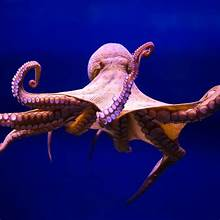
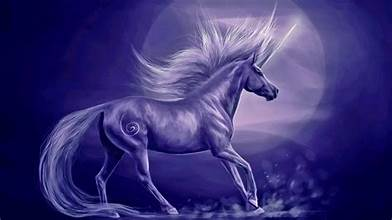

Top 10 Random Facts
-
The shortest war in history was between Britain and Zanzibar on August 27, 1896. It lasted only 38 minutes.
-
The electric chair was invented by a dentist.
-
Octopuses have three hearts.
-
The Hawaiian alphabet has only 12 letters.
-
There are more possible iterations of a game of chess than there are atoms in the known universe.
-
A group of owls is called a "parliament."
-
The human brain takes in 11 million bits of information every second but is only aware of 40.
-
The unicorn is Scotland's national animal.
-
A day on Venus is longer than a year on Venus. It takes Venus 243 Earth days to rotate on its axis,
but only 225 Earth days to orbit the Sun.
-
The Eiffel Tower can be 15 cm taller during the summer, due to thermal expansion of the iron.

Eiffel Tower

Octopus

Unicorn